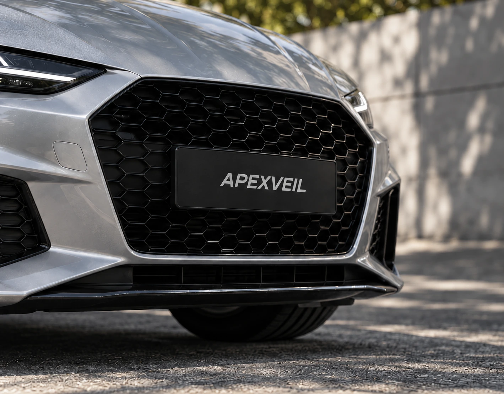

Perspective
A surface that follows the camera.
Natural-looking plate replacement and privacy for automotive imagery. Built in the open.
An edit should follow the scene, not compete with it.
A surface that follows the camera.
Shadows and reflections stay part of the image.
Designed for consistency across frames.

A focused tool for automotive creators. An independent foundation, developed one real-world case at a time.
Follow developmentIndependent environment, model verification and reproducible checks.
Natural replacement, blur and mosaic with interactive corrections.
Tracking, occlusion and consistency through motion.